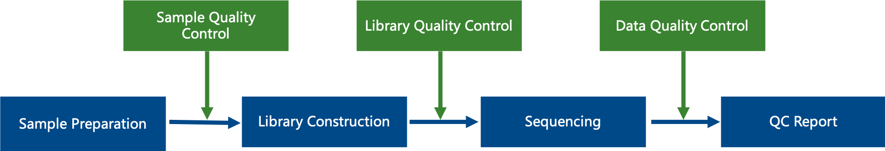

QC Analysis Report
| Contract Information | Contract Content |
|---|---|
| Contract ID | H202SC23080070 |
| Contract Name | TJ-US-Aruna-4-Human-exosome smallRNAseq-20M-WBI-NVUS2023072657 |
| Batch ID | X202SC23080070-Z01-F002 |
| Report Time | 2023-09-15 |
A. Library Preparation and Sequencing
From the RNA samples to the final data, each step (including sample test, library preparation, sequencing) would influence the data's quality. The quality of data would have direct impacts on the analysis results. To guarantee the reliability of the data, quality control was performed on each step of the procedure. The workflow is as follprojectows:

1 Sample Quality Control
Please refer to QC report for methods of sample quality control.
2 Library Construction, Quality Control and Sequencing
Briefly, 3’ and 5’ adaptors were ligated to 3’ and 5’ end of small RNA, respectively. Then the first strand cDNA was synthesized after hybridazition with reverse transcription primer. The double-stranded cDNA library was generated through PCR enrichment. After purification and size selection, libraries with insertions between 18~40 bp were ready for sequencing with SE50. Following is the workflow of library construction:
The library was checked with Qubit and real-time PCR for quantification and bioanalyzer for size distribution detection. Quantified libraries will be pooled and sequenced on Illumina platforms, according to effective library concentration and data amount required.
B. Results and Instructions
1 Data Quality Control
1.1 Error Rate Distribution
"e" represents sequencing error rate, "Qphred" represents base quality values of Illunima , the Qphred=-10log10(e). Base Quality and Phred score relationship in Illumina Casava 1.8 as follows:
| Phred score | Base Calling Wrong rate | Base Calling Correct rate | Q-score |
|---|---|---|---|
| 10 | 1/10 | 90% | Q10 |
| 20 | 1/100 | 99% | Q20 |
| 30 | 1/1000 | 99.9% | Q30 |
| 40 | 1/10000 | 99.99% | Q40 |
For RNA-seq technology, sequencing error rate distribution has two features, see Fig.1:
(1) Error rate grows with sequenced reads extension for the consumption of sequencing reagent. The phenomenon is common in the Illumina high-throughput sequencing platform(Erlich and Mitra, 2008; Jiang et al. 2011).
(2) The first six bases have a relatively high error rate. The reason is incomplete binding of the random hex-primers and RNA template in cDNA synthesis (Jiang et al.2011). In general, a single base error rate should be lower than 1%.
Fig.1 Error Rate Distribution
Horizontal axis for reads position, vertical axis for single base error rate.
1.2 Data Quality Summary
Data Quality Summary: Table 1.
Table 1 Data Quality Summary
| Sample | Raw reads | Raw data(G) | Error(%) | Q20(%) | Q30(%) | GC(%) |
|---|---|---|---|---|---|---|
| DS3_30SEP | 16725437 | 0.8 | 0.01 | 99.32 | 97.61 | 56.90 |
| DS3_20JAN | 14910662 | 0.7 | 0.01 | 99.27 | 97.19 | 57.20 |
| DS3_16JUN | 19460057 | 1.0 | 0.01 | 99.27 | 97.29 | 58.48 |
| DS3_13JUL | 12764015 | 0.6 | 0.01 | 99.23 | 97.14 | 57.75 |
Sample: sample ID.
Raw reads: Four rows as a unit to calculate the sequence number of each raw data file.
Raw bases: (Number of sequences) * (sequence length), use G for unit.
Error rate: base error rate.
Q20, Q30: (Base number of Phred value > 20(> 30)) / (Total base number).
GC content: (G&C base number) / (Total base number).
1.3 Data Filtration
The unpurified raw data are 5' primer comtains,no insert tags, oversized insertion, low quality reads, poly A tags and small tags. We will get rid of some contaminant reads from the fq file and get the final clean reads.
The data is processed by the following steps:
(1) Get rid of reads of which more than 50% bases has a base quality score no more than 5;
(2) Get rid of reads containing N > 10%;
(3) Get rid of reads with 5' primer contaminants;
(4) Get rid of reads without 3' primer and reads without the insert tag;
(5) Trim 3' primer sequence;
(6) Get rid of reads with polyA/T/G/C.
Small RNA adapte sequences:
RNA 5’ Adapter (RA5), part:
5'-GTTCAGAGTTCTACAGTCCGACGATC-3'
RNA 3' Adapter (RA3), part:
5'-AGATCGGAAGAGCACACGTCT-3'
Table 2 Data filtering summary
| Sample | total_reads | N% > 10% | low quality | 5_adapter_contamine | 3_adapter_null or insert_null | with ployA/T/G/C | clean reads |
|---|---|---|---|---|---|---|---|
| DS3_30SEP | 16725437 (100.00%) | 0 (0.00%) | 0 (0.00%) | 8957 (0.05%) | 776711 (4.64%) | 41890 (0.25%) | 15897879 (95.05%) |
| DS3_20JAN | 14910662 (100.00%) | 516 (0.00%) | 0 (0.00%) | 4396 (0.03%) | 228369 (1.53%) | 23128 (0.16%) | 14654253 (98.28%) |
| DS3_16JUN | 19460057 (100.00%) | 653 (0.00%) | 0 (0.00%) | 7597 (0.04%) | 247062 (1.27%) | 59783 (0.31%) | 19144962 (98.38%) |
| DS3_13JUL | 12764015 (100.00%) | 392 (0.00%) | 0 (0.00%) | 3532 (0.03%) | 152249 (1.19%) | 33945 (0.27%) | 12573897 (98.51%) |
Note:
(1) Sample: Sample id.
(2) total_reads: Total sequenced reads.
(3) N% > 10%: Percentage of reads with N > 10%.
(4) low quality: Percentage of low quality reads.
(5) 5_adapter_contamine: Percentage of reads with 5'adapter contamine.
(6) 3_adapter_null or insert_null: Percentage of reads with 3'adapter null or insert null.
(7) with ployA/T/G/C: Percentage of reads with ployA/T/G/C.
(8) clean reads: Total clean reads and its percentage accounted for raw reads.
C. Appendix
1 Introduction of Sequencing Data Format
The original raw data from Illumina platform are transformed to Sequenced Reads, known as Raw Data or RAW Reads, by base calling. Raw data are recorded in a FASTQ file, which contains sequencing reads and corresponding sequencing quality. Every read in FASTQ format is stored in four lines, as indicated below (Cock P.J.A. et al. 2010):
@HWI-ST1276:71:C1162ACXX:1:1101:1208:2458 1:N:0:CGATGT
NAAGAACACGTTCGGTCACCTCAGCACACTTGTGAATGTCATGGGATCCAT
+
#55???BBBBB?BA@DEEFFCFFHHFFCFFHHHHHHHFAE0ECFFD/AEHH
Line 1 begins with a '@' character and is followed by the Illumina Sequence Identifiers and an optional description. The details of Illumina sequence identifier are listed in the table below.
| Identifier | Meaning |
|---|---|
| HWI-ST1276 | Instrument – unique identifier of the sequencer |
| 71 | Run number – Run number on instrument |
| C1162ACXX | Flow Cell ID – ID of flow cell |
| 1 | Lane Number – positive integer |
| 1101 | Tile Number – positive integer |
| 1208 | X – x coordinate of the spot. Integer which can be negative |
| 2458 | Y – y coordinate of the spot. Integer which can be negative |
| 1 | Read number. 1 can be single read or Read 2 of paired-end. |
| N | Y if the read is filtered (did not pass), N otherwise. |
| 0 | Control number - 0 when none of the control bits are on, otherwise it is an even number |
| CGATGT | Illumina index sequences |
Line 2 is the raw sequence of the read.
Line 3 begins with a '+' character and is optionally followed by the same sequence identifiers and descriptions as in Line 1.
Line 4 encodes the quality values for the bases in Line 2 and contains the same number of characters as the bases in the read (Cock, 2009.).
2 Explanation of Sequencing Data Related
(1) The data delivered is a compressed file in format of '.fq.gz'. Before data delivery, we will calculate the md5 value of each compressed file and
please check it when you get the data. There are two ways to check the md5 value. In Linux environment, you can use 'md5sum -c <*md5.txt>' command under the data directory. In Windows environment, you can use
a calibration tool e.g. hashmyfiles. If the md5 value of compressed file doesn't match with the one we provide in md5 file in data directory, the file may have been damaged during the transmitting procedure.
(2) For paired-end (PE) sequencing, every sample should have 2 data flies (read1 file and read2 file). These 2 files have the same line number, you could use 'wc -l' command to check the line number in Linux environment.
The line number divide by 4 is the number of reads.
(3) The data size is the space occupied by the data in the hard disk. It's related to the format of the disk and compression ratio. And it has no influence on the quantity of sequenced bases.
Thus, the size of read1 file may be unequal to the size of read2 file.
(4) When customer’s samples need large amount of data e.g. whole genome sequencing data, we would use separate-lane sequencing strategy to make sure the quality of data, so it's possible that one sample has several parts sequencing data.
For example, if sample 1 has two read1 files, sample1_L1_1.fq.gz and sample1_L2_1.fq.gz, that means this sample was sequenced on different lanes.
(5) If we agree to deliver the clean data before the project starts, we will filter the data strictly according to the standard to obtain high quality clean data which can be used for further research and paper writing. We will discard the paired reads in the following situation: when either one read contains adapter contamination; when either one read contains more than 10 percent uncertain nucleotides; when either one read contains more than 50 percent low quality nucleotides (base quality less than 5). The data analysis results based on the clean data that is filtered by this standard can be approved by high level magazines (Yan L.Y. et al . 2013). If you want to get more information, please refer to the official website of Novogene (www.novogene.com).
(6) The Index is normally in the middle of the adapter during the process of experiment and sequencing except the special library. We can get the Read1 sequence and Read2 sequence according to the Index read. They are all the sequence of samples so that it's no necessary to dispose the beginning and end of reads in the downstream analysis (e.g. mapping).
(7) 30 days after the data delivery, we will delete outdated data. So please keep your data properly. If you have any questions or concerns, please contact us as soon as possible.
3 References
Cock P.J.A. et al (2010). The Sanger FASTQ file format for sequences with quality scores, and the Solexa/Illumina FASTQ variants. Nucleic acids research 38, 1767-1771.
Hansen K.D. et al (2010). Biases in Illumina transcriptome sequencing caused by random hexamer priming. Nucleic acids research 38, e131-e131.
Erlich Y.et al (2008). Alta-Cyclic: a self-optimizing base caller for next-generation sequencing.Nature Methods,5,679-682.
Jiang L.C. et al (2011). Synthetic spike-in standards for RNA-seq experiments. Genome research 21, 1543-1551.
Yan L.Y. et al (2013). Single-cell RNA-Seq profiling of human preimplantation embryos and embryonic stem cells. Nat Struct Mol Biol.